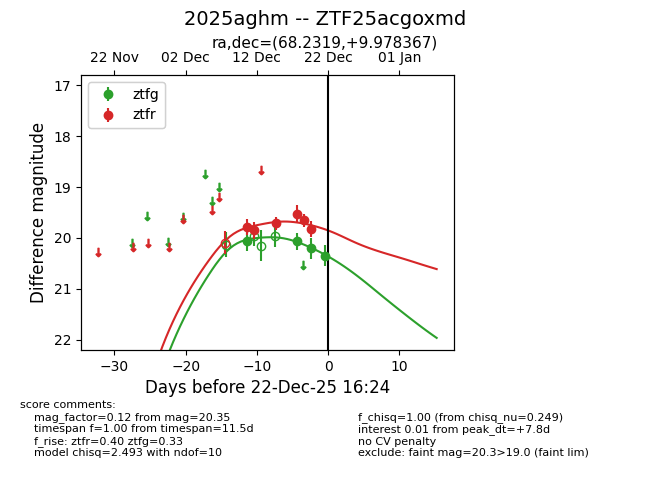
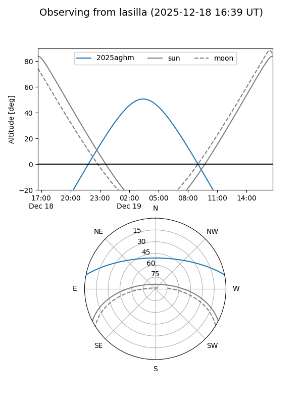
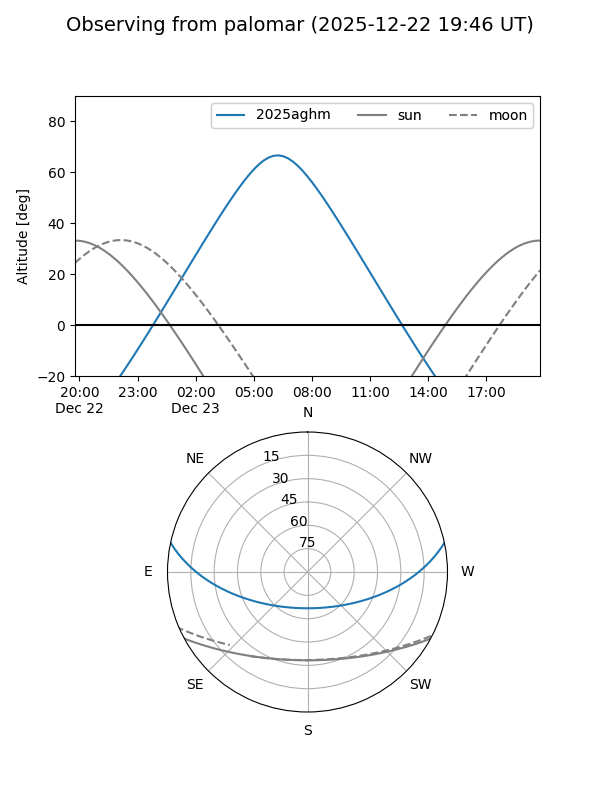
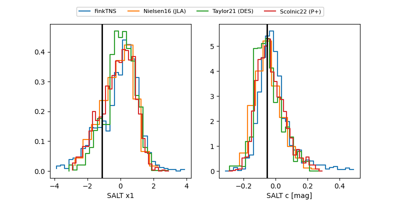

2025aghm
Target 2025aghm at 2025-12-21 07:18
Aliases and brokers:
FINK: fink-portal.org/ZTF25acgoxmd
Lasair: lasair-ztf.lsst.ac.uk/objects/ZTF25acgoxmd
ALeRCE: alerce.online/object/ZTF25acgoxmd
TNS: wis-tns.org/object/2025aghm
YSE: ziggy.ucolick.org/yse/transient_detail/2025aghm
alt names
ZTF25acgoxmd (ztf,fink_ztf)
2025aghm (tns,yse)
Coordinates:
equatorial (ra, dec) = 68.2319,+9.97837
equatorial (HMS+DMS) = 04:32:55.65,+09:58:42.12
galactic (l, b) = (186.1301,-24.77564)
Flags:
Photometry:
last ztfg=20.21, ztfr=19.82
3 ztfg, 6 ztfr detections
Lightcurve

Visibility


Additional plots
